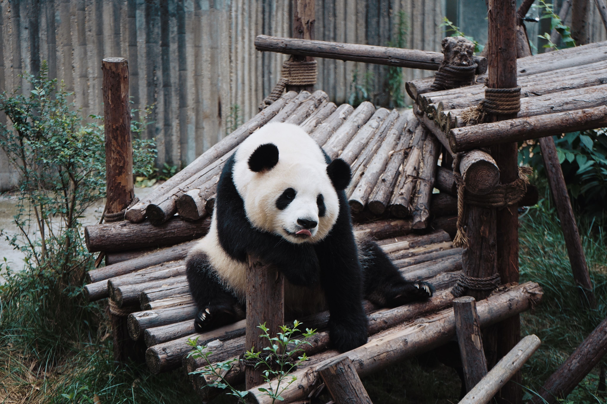
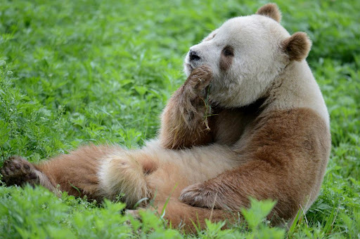
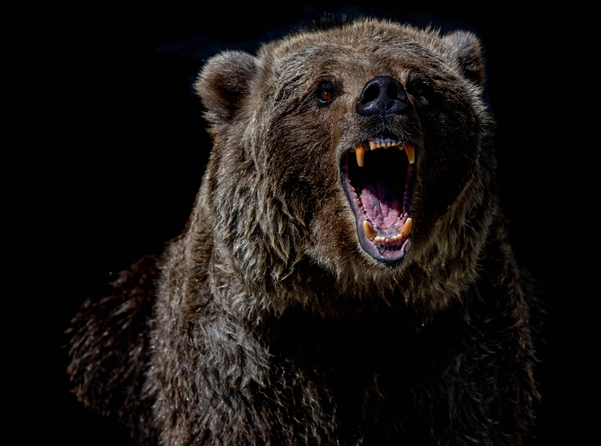

What types of pandas are there?
This is a red panda. Very cute.

This is a giant panda. Classic black and white colors, also very cute.

This is a Qinling panda. I didn't even know this existed before starting this project. I am now a fan.

This is not a panda. Notice how it looks more aggressive and less cute than a panda. I'm personally not a fan.
The path of the righteous man is beset on all sides by the inequities of the selfish and the tyranny of evil men. Blessed is he who, in the name of charity and good will, shepherds the weak through the valley of the darkness, for he is truly his brother's keeper and the finder of lost children.
-Quote from Pulp Fiction. Not sure if that's a real bible quote or not.
I am container
cta header
cta text